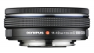

器材库 > APS画幅镜头 > M.ZD 14-42/3.5-5.6 ED EZ

详细规格
发布日期
2014-02-20
焦距
14mm-42mm
等效35mm画幅焦距
28mm-84mm
最大光圈
f/3.5-f/5.6
最小光圈
f/22
视角（对角）
75-29度
镜头结构
8片/7组
非球面镜片
3片
低/超低色散镜片
1片
光圈叶片
5片
最近对焦距离
0.200 (F=14mm) / 25（F=42mm）cm
最大放大倍率
0.23倍
滤镜口径
37mm
镜头卡口
Micro 4/3
防抖
否
颜色
银色, 黑色
尺寸
60.6 x 22.5mm
重量
93g
附件
镜头盖(LC-37B), 镜头后盖(LR-2) 使用说明书, 国际保修卡
备注
选购:保护滤镜 (PRF-D37 PRO) 镜头盖 (LC-37C) 微距转接镜头 (MCON P-02)
老襄阳摄影师2014-11-07 21:355 分
操作性 5.00耐用性 5.00性价比 5.00解像力 5.00色彩还原 5.00机械结构 5.00
老襄阳摄影师2014-11-07 21:20
promise3232014-08-09 12:574.92 分
操作性 5.00耐用性 4.50性价比 5.00解像力 5.00色彩还原 5.00机械结构 5.00